館内マップ
building map
本館案内
building map
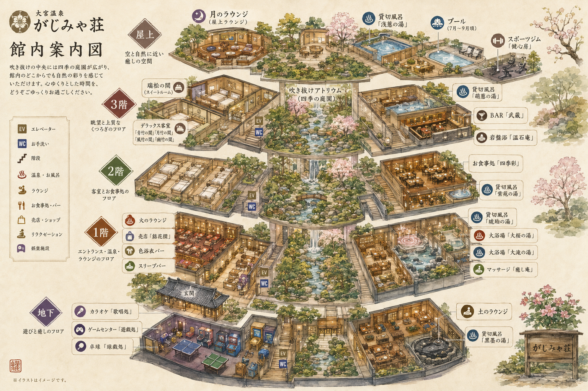
吹き抜けアトリウムを中心に、温泉・ラウンジ・お食事処など
多彩な施設をご用意しております。
マップから階を選んで、館内をご覧ください。
B1 FLOOR
地下

土のラウンジ
読書やボードゲームを楽しめる、 落ち着いた空間。

図書室「千代文庫」
小説や雑誌、漫画などを 取り揃えた図書室。
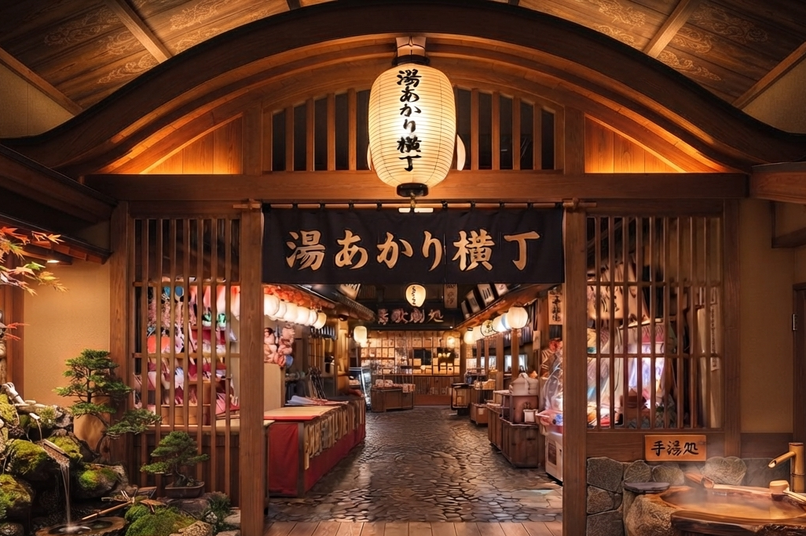
湯あかり横丁
館内にいながら、 温泉街を楽しめるエリアです。

カラオケ「歌戯処」
使い放題のカラオケルーム。 ラウンジのお酒も持込めます。

ゲームセンター「遊戯処」
メダルも無料貸し出しで 遊び放題のゲームセンター。
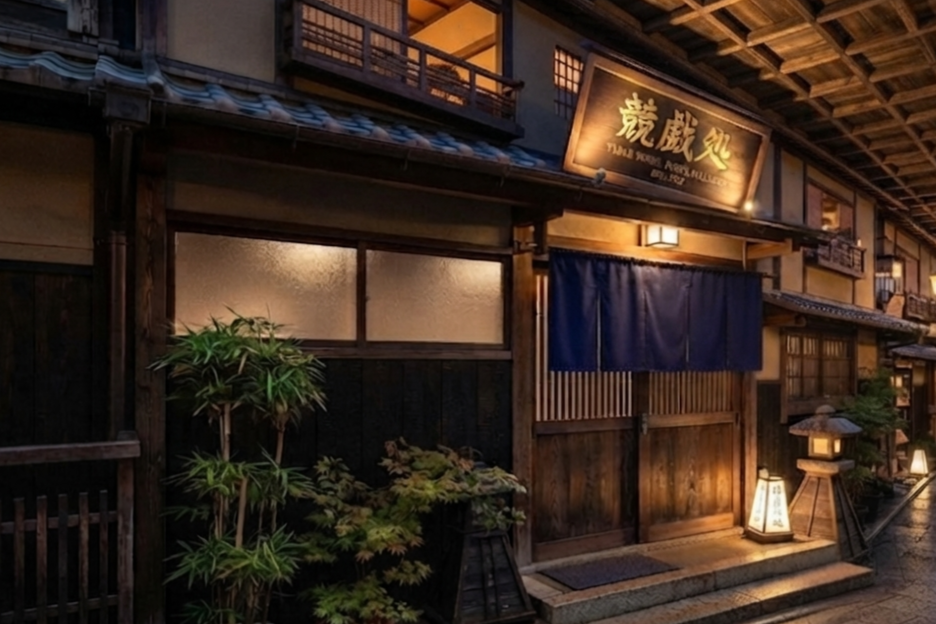
プレイルーム「競戯処」
卓球、ダーツ、ビリヤードを お楽しみいただけます。

湯あかり横丁屋台
スマートボールや射的など、 昔ながらの遊びが楽しめます。

貸切風呂「黒墨の湯」
洞窟風呂で黒湯が楽しめる 貸切風呂です。
1F FLOOR
1階
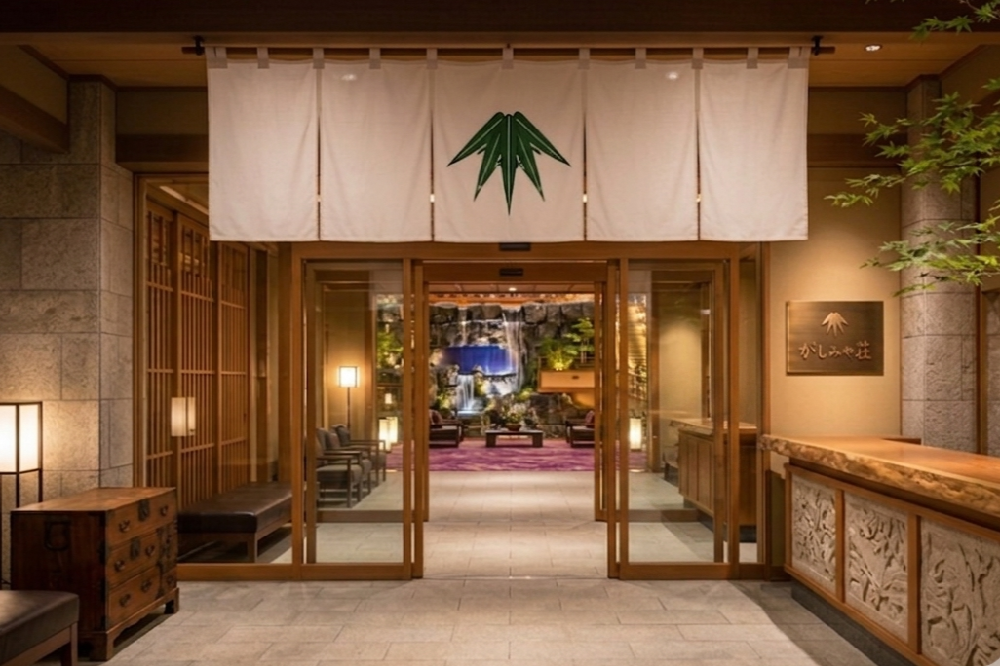
玄関
スタッフと看板犬がお出迎えいたします。 チェックイン前後の荷物のお預かりなど。

吹き抜けアトリウム
本館の中央に広がる、 豪華な庭園と開放的な吹き抜け空間。

フロント
チェックイン・チェックアウトのほか、 ご入用の際にはご滞在をサポートいたします。
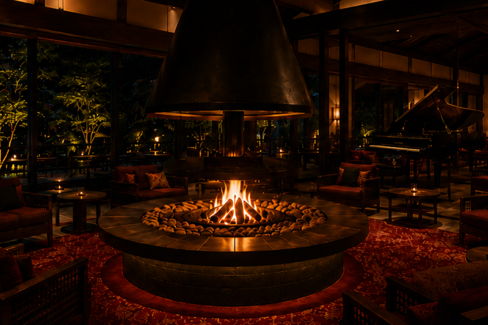
火のラウンジ
暖炉の炎が揺らめくラウンジ。 日によってはミニライブなども開催します。

売店「銘花撰」
地元の銘菓や特産品、 オリジナル商品などを取り揃えております。
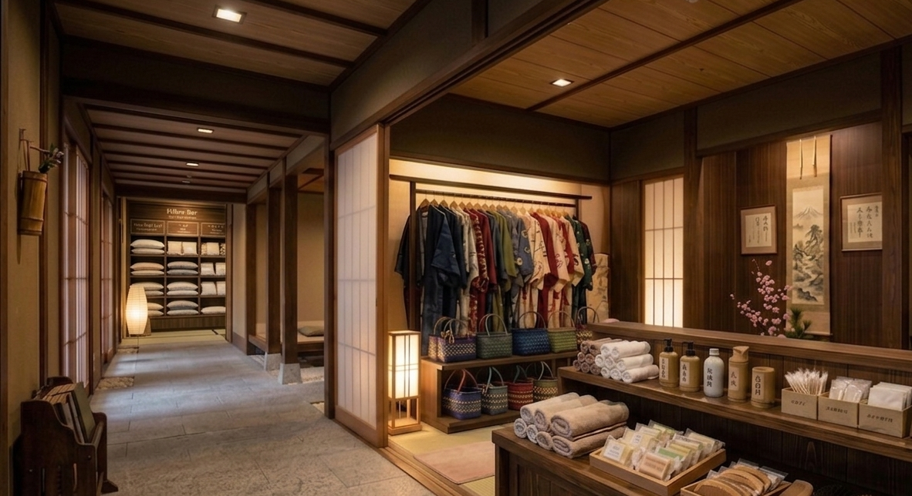
旅支度処
ご滞在をより快適にするための 様々なアイテムをご用意しております。

大浴場
趣の異なる二つの湯処をご用意しております。 男女入れ替え制です。
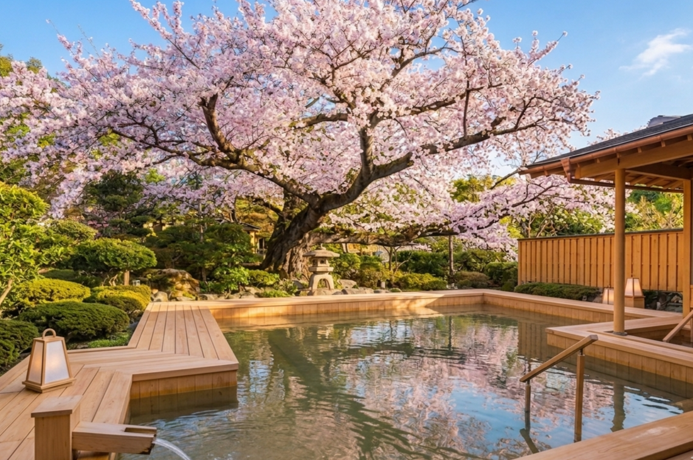
大桜の湯
檜と桜をテーマにした華やかな湯処。
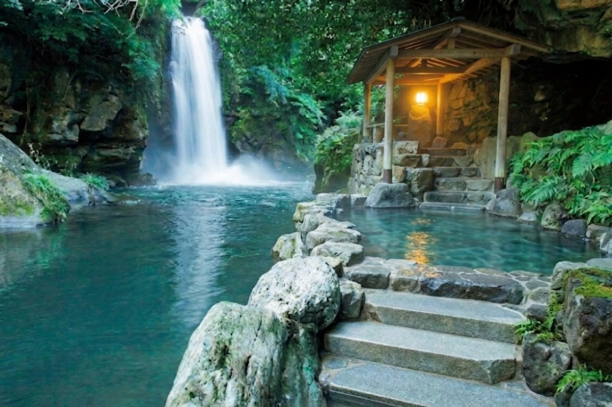
大滝の湯
岩と滝をテーマにした開放的な湯処。
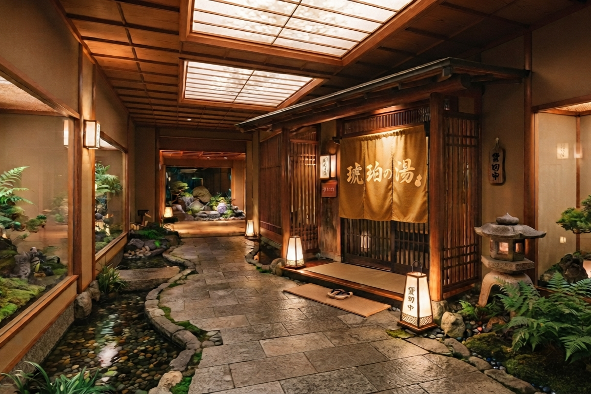
貸切風呂「琥珀の湯」
湯冷めしにくい塩化物泉のお風呂。 浴室に成分が固まって層になっております。
2F FLOOR
2階

お食事処「四季彩」
全席個室、 プライベートな空間でお過ごしいただける夕食会場です。

貸切風呂「紫苑の湯」
紫苑の花をイメージした、 清涼感のある炭酸水素塩泉のお風呂。
3F FLOOR
3階
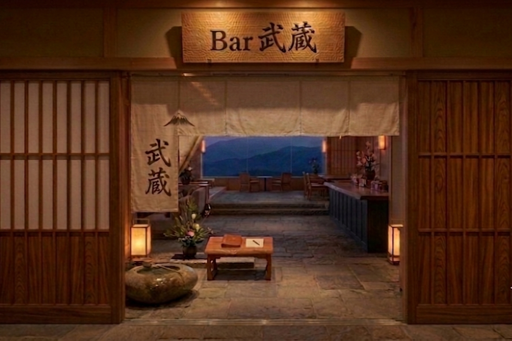
Bar「武蔵」
夜だけオープンする、
バーテンダーが作るカクテルを楽しめる本格バー。
朝は朝食会場になります。
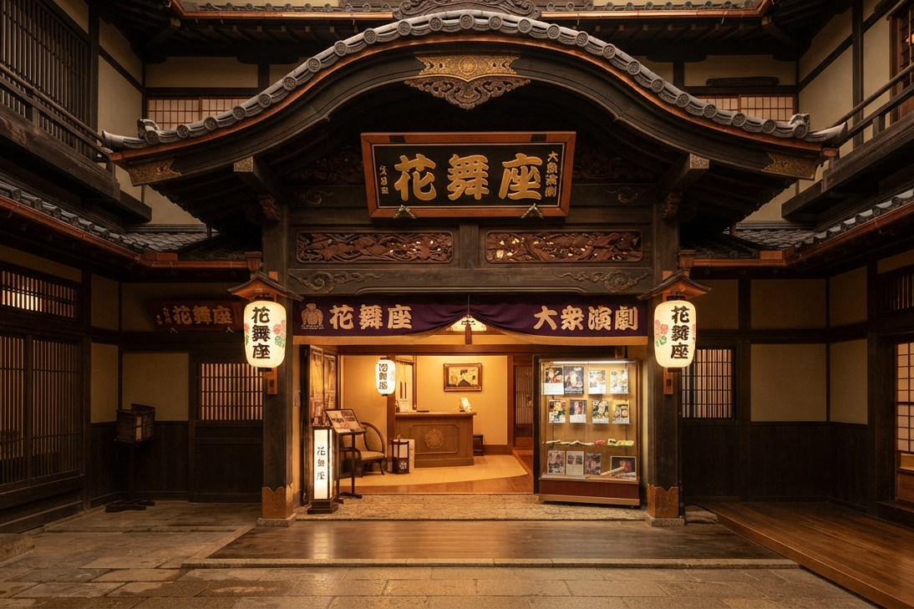
大衆演劇場「花舞座」
演劇や、和太鼓ショーなどが開催される演劇場。

貸切風呂「瑠璃の湯」
畳敷きの浴室でゆっくり入れる、 傷に効く硫酸塩泉の温泉です。
ROOFTOP
屋上
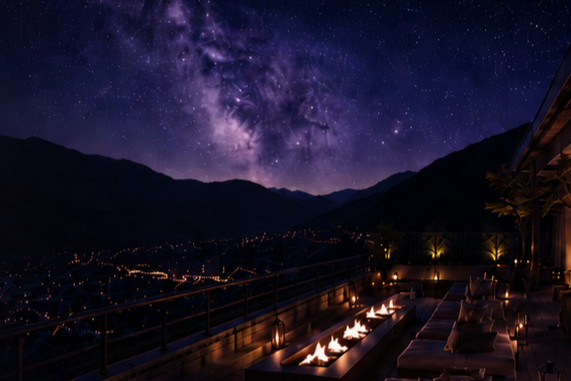
月のラウンジ
満天の星空や、 雄大な山々の景色を楽しめる屋上ラウンジ。

天空癒庭
岩盤浴、スポーツジム、 マッサージ機など癒しをテーマにした施設。
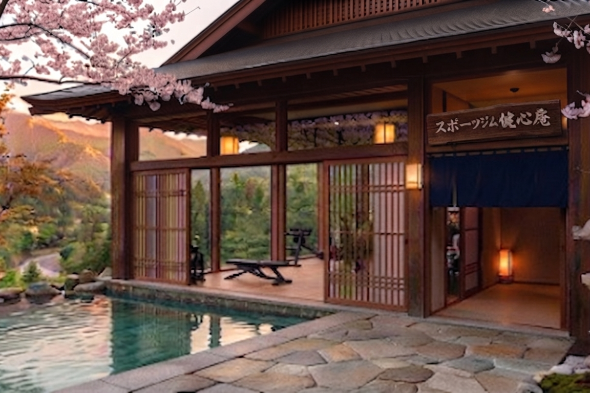
スポーツジム「健心庵」
絶景を見ながら利用できるスポーツジム。

岩盤浴「温石庵」
多種の天然鉱石と、 温泉熱を利用した岩盤浴場。

マッサージ「休息庵」
最新式マッサージ機を、 ゆっくり個室で利用できます。

プール（7～9月のみ）
夏季の場合のみ、 プールもご利用いただけます。

空中庭園
雄大な山々の景色や、 夜景をお楽しみいただける屋上庭園。
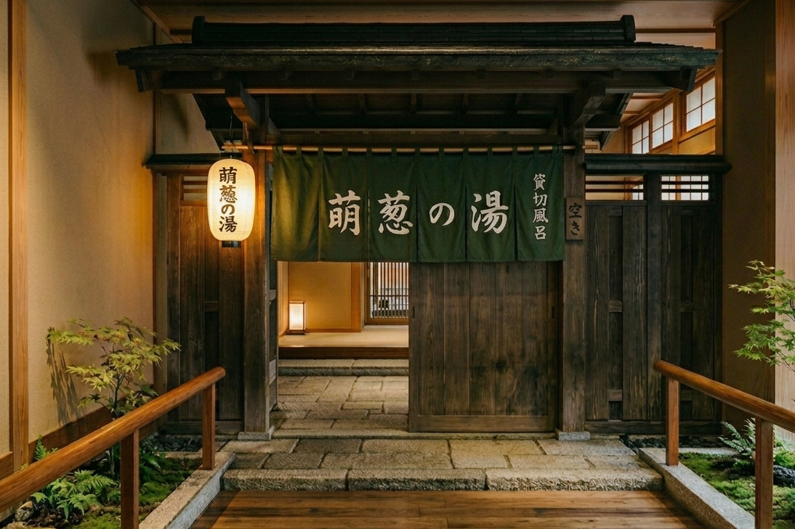
貸切風呂「萌葱の湯」
貸切風呂では一番広い、 ジャングル風呂のラドン温泉。

貸切風呂「浅葱の湯」
景色を眺めながら、 ゆっくり入れる二酸化炭素泉。
庭園散策マップ
garden map
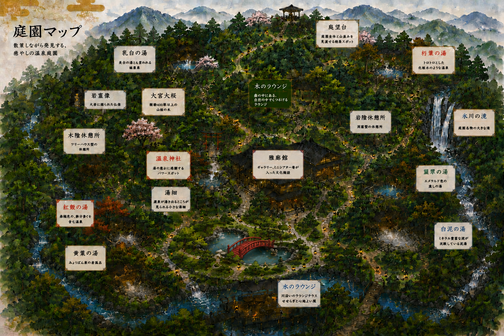
四季折々の表情を見せる広大な日本庭園。
温泉神社や湯畑、展望台、ラウンジなどを巡りながら、
ゆったりとした散策をお楽しみください。

雅廊館
庭園の中心に佇む文化施設。 ギャラリーやシアター、ラウンジなどが入っています。
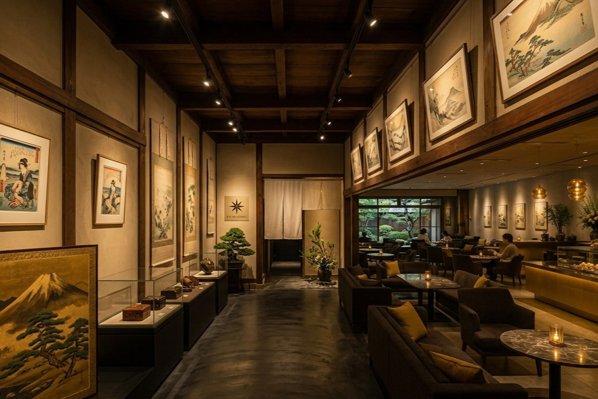
ギャラリー「芸彩堂」
美術品や、がしみや荘の歴史などを展示しております。

ミニシアター「映彩堂」
厳選した映画を放映しています。 オールナイト上映会なども開催しております。
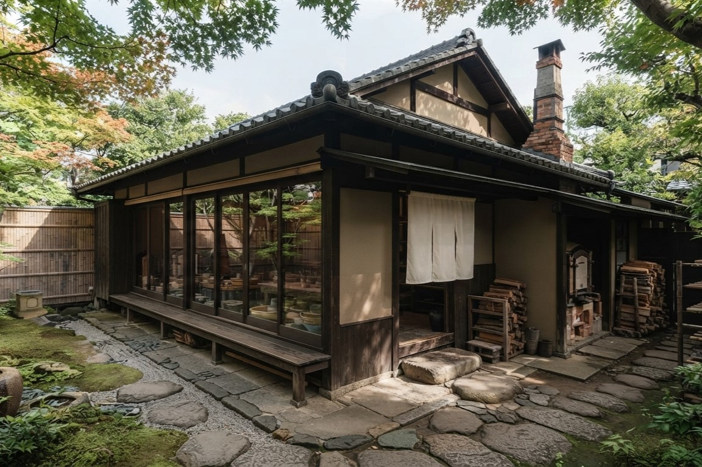
工房「工彩堂」
陶芸・根付・ガラス細工体験ができる、離れの工房です。
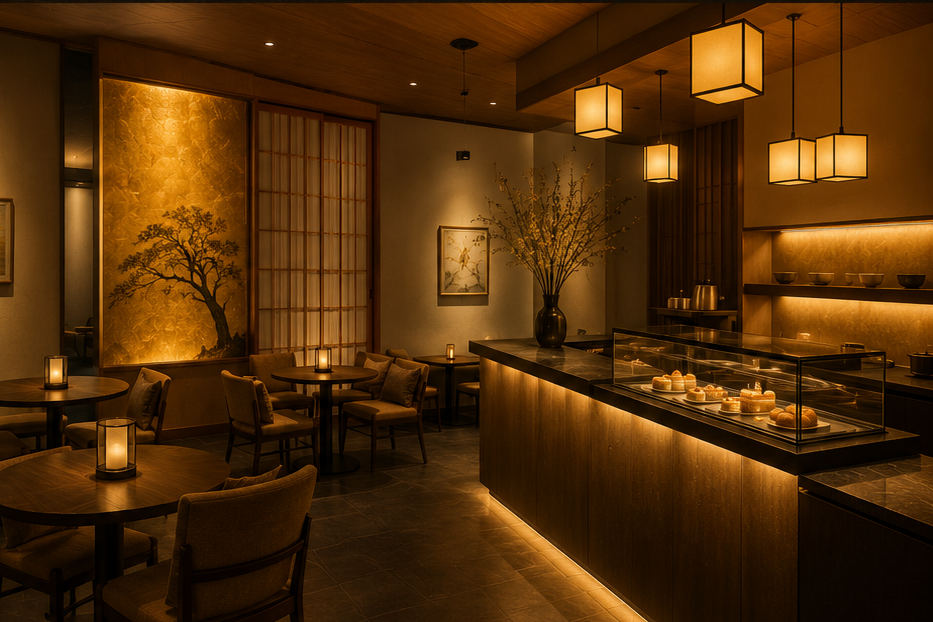
金のラウンジ
落ち着いた空間で、 コーヒーやお酒を楽しめます。

湯畑
豊富な自家源泉から湧き出る温泉を利用した湯畑。

温泉神社
温泉の恵みに感謝を捧げる神社。 お守りなども購入できます。

展望台
庭園や山々の景色、満天の星空を 一望できる高台の展望スポット。

氷川大滝
落差50メートルの大きな滝。 冬には氷瀑が楽しめます。

大宮大桜
樹齢400年を超える大きな山桜の御神木。 4月上旬ごろ満開の花を咲かせます。

休憩処
庭園内にある、秘密基地のような休憩所。 貸し切り風呂の待合いなどにお使いください。
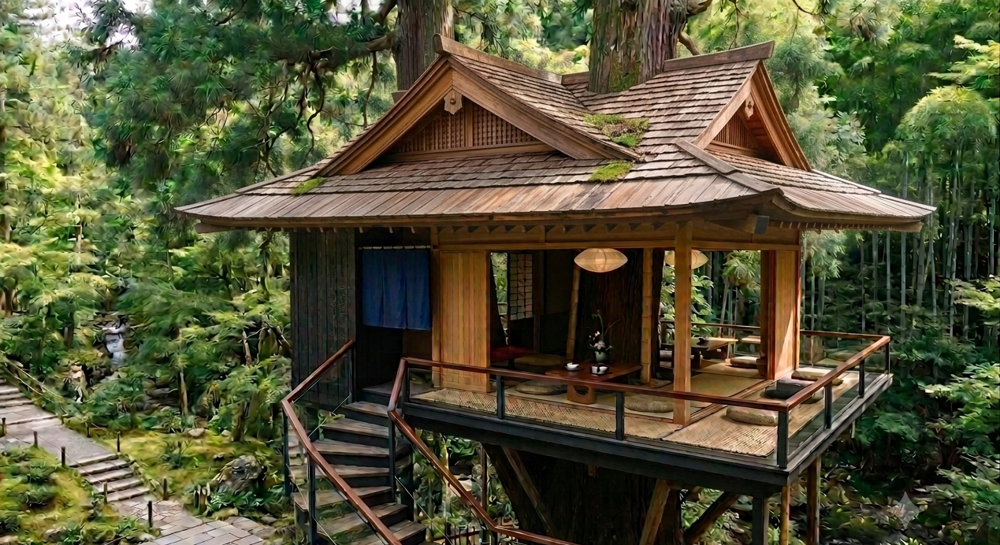
木陰休憩処
ツリーハウス型の眺めのいい休憩処。

岩陰休憩処
洞窟型の落ち着く空間の休憩処。

岩窟像
大岩に掘られた石像。 300年以上前に掘られた、貴重な遺跡です。

水のラウンジ
川のせせらぎを聞きながら寛げる川床ラウンジ。

木のラウンジ
森林浴をしながら寛げる グランピング型ラウンジ。
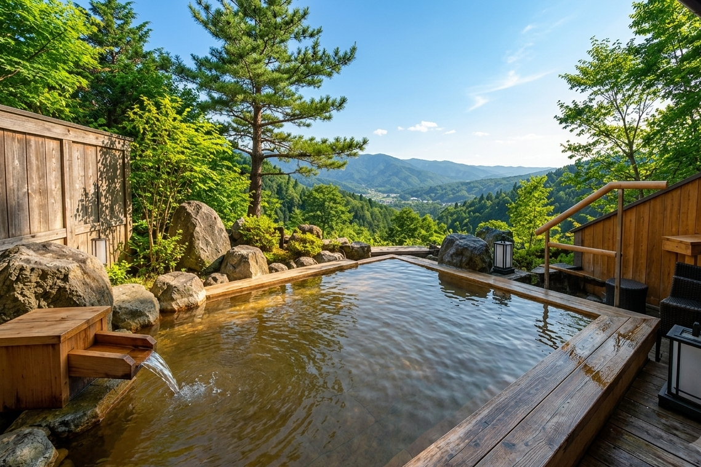
貸切風呂
庭園内に点在している、 個性豊かな貸し切り露天風呂。
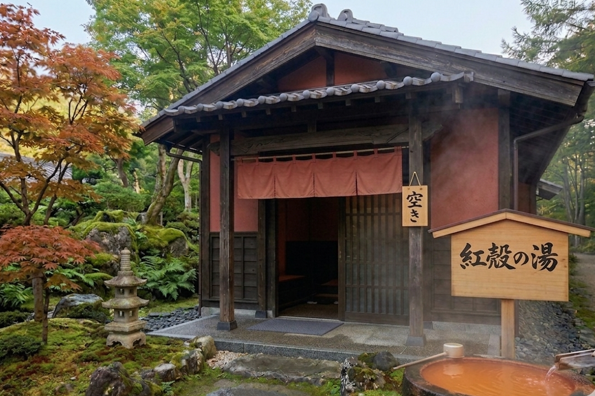
紅殻の湯

乳白の湯

翡翠の湯

黄檗の湯
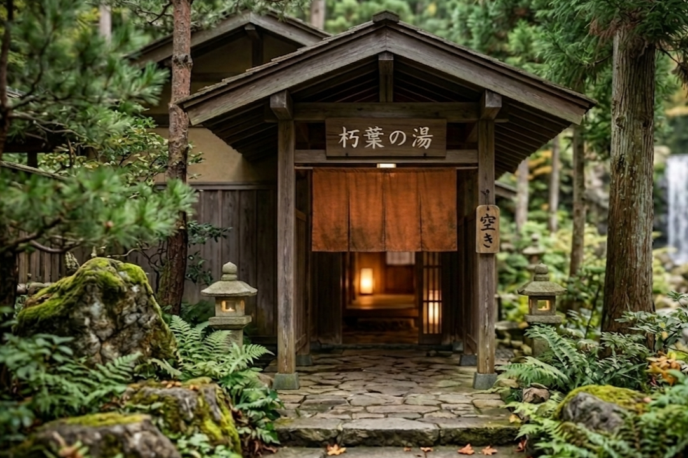
朽葉の湯

白泥の湯